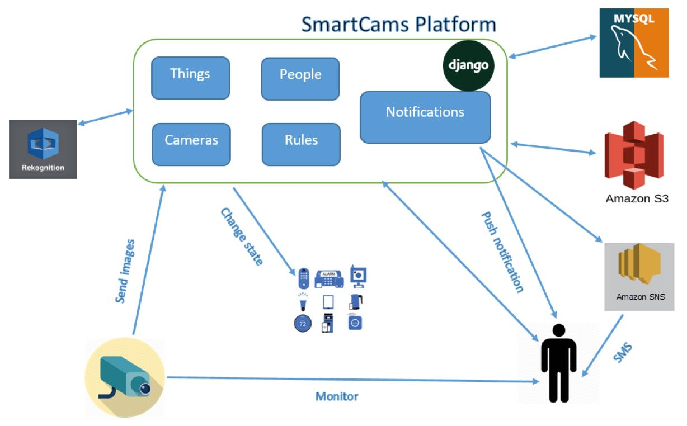
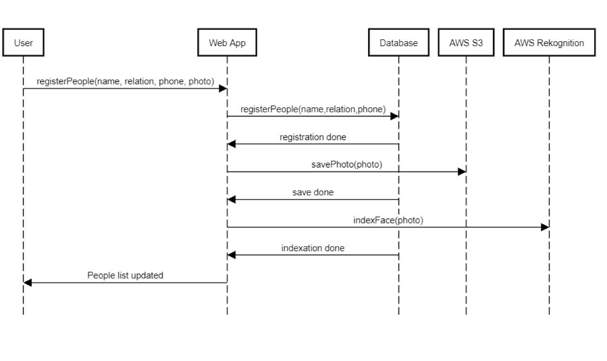
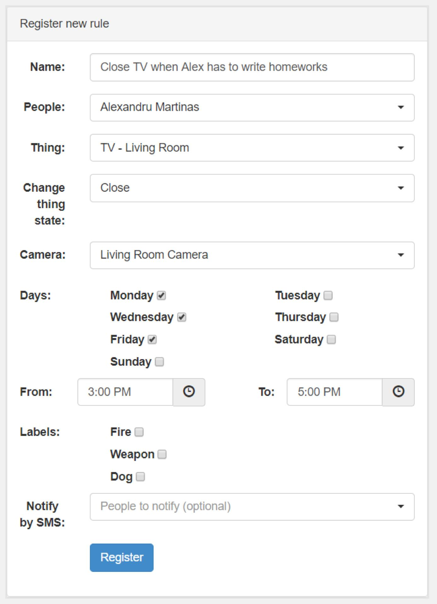
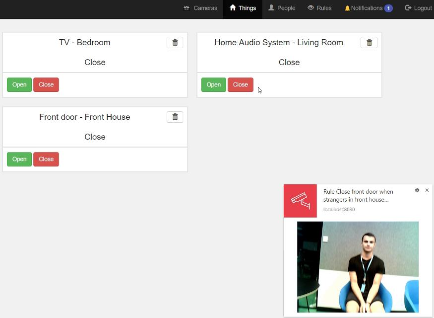

Preambul
Articolul de față prezintă un proiect software menit a facilita interacțiunea dintre utilizatori și dispozitivele interconectate (IoT – Internet of Things) în ceea ce privește autentificarea și autorizarea. Astfel, se dorește a se asigura un plus de siguranță mediului (de exemplu, o clădire modernă) în care un grup de persoane trăiește sau își desfășoară activitatea.
Acest deziderat va fi împlinit prin transformarea sistemul de supraveghere video al utilizatorilor într-un sistem inteligent care monitorizează orice eveniment vizibil. Suplimentar, prin intermediul unui set de reguli definite de utilizatori, aplicația reacționează la diferite evenimente modificând starea dispozitivelor conectate și trimițând diferite notificări utilizatorilor cu privire la acestea sau la posibilele amenințări – e.g., incendiu, intruziuni nedorite etc. – la siguranța acestora sau a mediului supravegheat. Din acest punct de vedere, tema abordată se circumscrie problematicilor expuse de (Guinard & Trifa, 2016).
Aplicația pe care o vom prezenta mai jos a fost dezvoltată în limbajul de programare Python cu ajutorul framework-ului Django. Notificarea utilizatorilor asupra evenimentelor ce au survenit în urma monitorizării dorite se realizează prin două metode. Prima se concretizează prin facilitatea Notifications oferită de suita de tehnologii HTML5, având suport în majoritatea navigatoarelor Web actuale. A doua opțiune este furnizată de serviciul disponibil în “nori” AWS SNS (Amazon Simple Notification Service) – bazat pe paradigma publish/subscribe – și constă în trimiterea de mesaje de tip SMS utilizatorului sau apropiaților acestuia. Pentru păstrarea datelor, am ales să folosim o bază de date relațională, mai puțin pentru imaginile furnizate de camerele de supraveghere (Webcam-uri), care sunt stocate de serviciul AWS S3. Procesarea datelor obținute de la camerele video se realizează via serviciul AWS Rekognition.
Arhitectura generală a soluției
Principalul obiectiv este acela de a facilita interacțiunea dintre utilizatori și dispozitive prin recunoașterea lor automată ceea ce face posibilă redarea preferințelor într-un mod individual. Acest lucru este posibil prin intermediul unui sistem de supraveghere video care să recunoască în timp real prezența unei persoane și să transmită dispozitivelor conectate comenzi. Utilizatorul trebuie să își înregistreze în aplicație camerele video și dispozitivele cu care dorește să interacționeze, precum și toate persoanele care pot interacționa cu ele. Odată realizate aceste aspecte, fiecare individ va putea crea diferite scenarii de utilizare prin definirea de reguli.
Din punct de vedere arhitectural, sistemul proiectat are următoarea structură ilustrată de diagrama de mai jos.


În continuare, se discută succint rolul principalelor module ale platformei.
Cameras
Modulul joacă un rol cheie în cadrul aplicației concentrându-se pe recunoașterea utilizatorilor sau a diferitelor evenimente. Utilizatorul își înregistrează în aplicație camerele de supraveghere disponibile. După terminarea cu succes a acestei activități, există posibilitatea de a vizualiza în timp real înregistrările oricărei camere video. Deoarece nu am avut acces la un sistem de camere de supraveghere, am utilizat camera Web a dispozitivului folosit pentru accesarea aplicației (laptop). De asemenea, orice camera Web auxiliară conectată la acesta este recunoscută de aplicație în mod automat pentru ca utilizatorul să o poată înregistra și folosi.
Pentru ca aplicația să recunoască prezența unei persoane și să o identifice, aceasta procesează imagini furnizate de camerele de supraveghere. Acest lucru se întâmplă doar în cazul în care se detectează mișcare. Pentru a simula un senzor de mișcare, pentru fiecare cameră din sistem se calculează în mod periodic diferența dintre ultima imagine capturată și imaginea actuală. Această diferență este compusă din suma tuturor diferențelor dintre pixelii aflați în aceeași poziție în imagine. În cazul în care diferența este mai mare de 10%, putem considera că a apărut o schimbare în sistem și trimitem aplicației imaginea spre a fi procesată. Marja de eroare de 10% a fost luată în calcul pentru cazurile în care apar mici modificări în zona monitorizată fără o importanță majoră (de pildă, modificarea luminozității din cameră în funcție de momentul zilei).
Pentru recunoașterea utilizatorului, aplicația folosește un serviciu AWS: Amazon Rekognition. Acesta preia imaginea și compară fețele identificate cu cele stocate în colecția de cunoscuți a utilizatorului. Pentru a avea o acuratețe cât mai mare, o regulă este activată doar dacă serviciul identifică o similaritate de minim 90%. Pe lângă recunoașterea faciala, aplicația folosește funcția de asociere a unor etichete (termeni de conținut) imaginii respective pentru a se identifica diferite scenarii sau activități definite de utilizator.
People
Acest modul se ocupă de înregistrarea persoanelor cunoscute utilizatorului. Acestea pot fi membri ai familiei, prieteni sau cunoscuți care pot interacționa cu dispozitivele înregistrate în sistem sau utilizatorul dorește să fie recunoscute de camerele de supraveghere cu scopul de a declanșa acțiuni în funcție de anumite evenimente. Fiecare profil al unei persoane trebuie să fie însoțit de o fotografie a acesteia. Datele sunt stocate folosind serviciul AWS S3 urmând ca după aceea să fie înregistrate într-o colecție privată a utilizatorului folosită de AWS Rekognition pentru recunoașterea facială de fiecare dată când se procesează o imagine furnizată de camere.
Procesul de adăugare a unui individ este redat mai jos printr-o diagramă de secvență.

Things
Prin intermediul acestui modul, utilizatorul își poate înregistra în sistem toate dispozitivele inteligente cu care dorește să interacționeze. Pentru că nu am avut acces la dispozitive reale și la o infrastructură necesară controlului acestora de la distanță, am simulat existența lor via înregistrări în baza de date.
Pentru a simplifica lucrurile, am ales ca toate dispozitivele să fie reprezentate de 2 stări posibile: închis, respectiv deschis. Motivul pentru care am ales aceste două stări este caracterul lor general care le permite să se găsească la cât mai multe dispozitive (e.g. ușă, fereastră, sistem de aer condiționat, energie electrică, televizor etc). Astfel, se poate simula o gamă largă de dispozitive și se pot imagina numeroase scenarii de utilizare practică a aplicației.
Rules
Modulul de reguli este responsabil de automatizarea interacțiunii dintre utilizator și rețeaua de dispozitive. Este modulul care conectează celelalte 3 module specificate anterior: Cameras, People și Things. Principiul de baza este următorul: când o anumită cameră recunoaște o anumită persoană, sistemul va modifica starea unui dispozitiv. Pentru ca regulile să acopere cât mai multe scenarii posibile și pentru ca utilizatorul să poată defini evenimente cât mai specifice, se pot stabili parametri auxiliari precum anumite zile în care să fie validă regula, un interval orar, diferite obiecte/acțiuni din jur care să fie recunoscute de camerele de supraveghere, precum și o listă de persoane care să fie notificate prin SMS la activarea regulii.
Notifications
Modulul de notificări este cel care îl ține la curent pe utilizator cu privire la toate modificările din sistem. În cadrul sistemului există implementate două modalități de notificare: push notification la nivel de browser Web și SMS. Am ales push notification deoarece este o modalitate simplă și foarte practică. Avantajul acesteia este că aplicația poate trimite notificări chiar dacă utilizatorul nu este activ în cadrul aplicației, notificarea fiind trimisă la nivelul navigatorului Web. Pentru cazurile speciale, când utilizatorul consideră că un anumit eveniment este mai important, acesta poate opta pentru notificarea prin SMS, atât a sa, cât și a unor persoane cunoscute. O notificare este generată atunci când utilizatorul modifică starea unui dispozitiv din aplicație sau atunci când o regulă este activată.
API oferit
Suplimentar, sistemul pune la dispoziție pe partea de server un API (Application Programming Interface), optându-se pentru o arhitectură REST ce permite o comunicare stateless cu clientul. Aceste aspecte s-au bazat pe cunoștințele dobândite în cadrul materiei “Tehnologii Web” (Buraga, 2018).
Aplicația modelează 5 resurse principale, corespunzătoare modulelor platformei: /things, /cameras, /people, /rules, /notifications. Toate acțiunile asupra acestor URL-uri – via metodele protocului HTTP – necesită ca utilizatorul să fie autentificat. Informații tehnice sunt expuse în lucrarea (Mărtinaș, 2018).
Procesarea imaginilor
În această secțiune oferim o serie de detalii vizând pașii importanți efectuați pentru procesarea imaginilor obținute de la camerele de supraveghere înregistrate în sistem.
Pentru a verifica prezența unei persoane în zona de acțiune a unui dispozitiv, sistemul preia și procesează imagini de la camerele de supraveghere. În cazul în care este identificată o persoană cunoscută, sistemul parcurge toate regulile definite în care aceasta apare, încercând să valideze toate constrângerile specificate.
Așa cum am menționat mai sus, pentru recunoașterea utilizatorului aplicația folosește serviciul Amazon Rekognition care preia imaginea și compară fețele identificate cu cele stocate în colecția de cunoscuți a utilizatorului. Ținând cont că pentru fiecare imagine procesată Amazon Rekognițion percepe o taxă, am implementat o funcție care să identifice atunci când este detectată mișcare în zonele supravegheate de camerele video. Astfel, reducem considerabil numărul de imagini procesate și, în consecință, costurile aplicației.
Senzorul de mișcare implementat funcționează astfel: pentru fiecare cameră din sistem se calculează, în mod periodic, diferența dintre ultima imagine capturată și imaginea actuală. Această diferență este compusă din suma tuturor diferențelor dintre pixelii aflați pe aceeași poziție în imagine.
În cazul în care diferența este mai mare de 10%, putem considera că a apărut o schimbare în zona monitorizată și trimitem aplicației imaginea spre a fi procesată. Odată ajunsă imaginea pe partea de server, aceasta este salvată provizoriu într-un bucket privat folosind serviciul Amazon S3. Pentru procesarea imaginii, folosim 2 funcții din cadrul serviciului Recognition, una pentru recunoașterea facială și cealaltă pentru identificarea de etichete. Funcția de recunoaștere faciala preia imaginea și încearcă să găsească fețe similare cu cele existente în colecția de fețe cunoscute pe care a specificat-o în prealabil utilizatorul.
Funcția de recunoaștere facială are nevoie de 4 parametri: colecția în care se realizează căutarea, similaritatea minimă dintre fețe, imaginea și numărul maxim de fețe returnate. Pentru o acuratețe cât mai mare, am setat similaritatea minimă egală cu 90%. Cum serviciul S3 este deja integrat cu Amazon Rekognition, pentru imagine putem furniza obiectul creat la salvarea provizorie. În cazul în care se găsește o similaritate cu o persoană din colecție, se vor parcurge toate regulile în care aceasta apare, încercându-se validarea prin verificarea celorlalte constrângeri.
Pasul următor este identificarea etichetelor din imagine. Fiecare regulă care conține o etichetă identificată este verificată și validată.
În cazul în care nicio regulă nu este activată, sistemul nu suferă nicio modificare.
Scenarii de utilizare
Un prim scenariu de utilizare este următorul: Un proprietar de apartament a achiziționat o suită de dispozitive inteligente printre care și un televizor smart. El dorește să automatizeze controlul acestuia în funcție de fiecare membru al familiei. De exemplu, el vrea ca televizorul să fie închis în timpul săptămânii, în intervalul orar 15–17, atunci când copilul său trebuie să își realizeze temele. Astfel, proprietarul trebuie să înregistreze în sistem o cameră video care să poată monitoriza încăperea în sine, plus televizorul ca dispozitiv controlabil. De asemenea, trebuie realizată supravegherea copilului său – o persoană cunoscută.
Odată realizate acestea, proprietarul poate defini o regulă modelând acest comportament – a se vedea captura-ecran de mai jos.

Începând din momentul în care regula a fost înregistrată, de fiecare dată când camera înregistrată detectează mișcare, va verifica dacă sunt satisfăcute toate condițiile din regulă. În caz de succes, proprietarul va fi notificat prin intermediul sistemului – de pildă, direct în cadrul navigatorului Web, conform celor discutate anterior.
Al doilea studiu de caz descrie detectarea intrușilor. Utilizatorul poate crea o regulă care va avea ca efect trimiterea unui mesaj SMS atunci când o persoană necunoscută (a cărei fotografie n-a fost înregistrată în sistem) este detectată de una dintre camerele de supraveghere – în situația de față, cea care monitorizează ușa de la intrare care va fi automat încuiată de către aplicație conform regulii. Utilizatorul poate decide ulterior ca persoana semnalată să fie adăugată listei de cunoscuți ori să anunțe autoritățile, punând la dispoziție și imaginile înregistrate.
Captura-ecran următoare furnizează un instantaneu al acestui scenariu.

Concluzii
În cadrul acestui articol a fost descrisă o soluție complexă de monitorizare a unui areal de interes în vederea studierii interacțiunii în timp-real dintre utilizatori și dispozitivele interconectate. Platforma dezvoltată e una originală, adoptând unele dintre cele mai actuale paradigme, tehnologii și instrumente ale domeniilor Web, cloud computing și inginerie software.
Cele expuse mai sus reprezintă o parte dintre contribuțiile științifice cu caracter teoretic și aplicativ realizate în cadrul lucrării de licență susținute la Facultatea de Informatică de către absolventul Alexandru Mărtinaș, îndrumat de Dr. Sabin-Corneliu Buraga.
Referințe bibliografice
- Buraga, S., Tehnologii Web, Facultatea de Informatică, Universitatea “Alexandru Ioan Cuza” din Iași, 2018: http://profs.info.uaic.ro/~busaco/teach/courses/web/web-film.html
- Guinard, D., Trifa, V., Building the Web of Things, Manning, 2016 – http://webofthings.org/book/
- Mărtinaș, A., SmartCams – Managementul dispozitivelor interconectate prin intermediul camerelor de supraveghere, Teză de licență, Facultatea de Informatică, Universitatea “Alexandru Ioan Cuza” din Iași, 2018.
- * * *, Amazon S3, 2018: http://aws.amazon.com/s3/
- * * *, Amazon Simple Notification Service, 2018: http://aws.amazon.com/sns/getting-started/
- * * *, Amazon Rekognition, 2018: http://aws.amazon.com/rekognition/resources/
- * * *, HTML5 Notifications API, 2018: http://notifications.spec.whatwg.org/